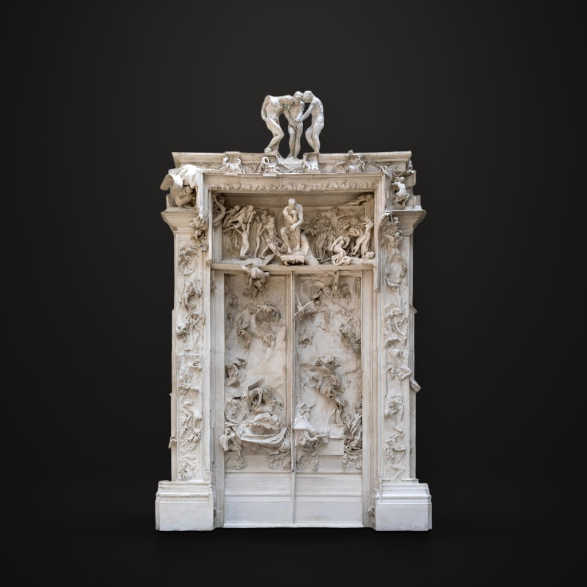

地狱之门
罗丹 · 1880—1917年
La Porte de l'Enfer
讲解节选
一扇六米多高的大门，门上挤满了扭曲、坠落、纠缠在一起的人体。门顶上，三个一模一样的人低着头，朝不同的方向；门楣正中，坐着一个陷入沉思的人。
这是奥古斯特·罗丹的《地狱之门》，一件石膏高浮雕。这个项目从一八八零年开始；眼前这件完整的石膏，是一九一七到一九一八年间组合翻制的，奥赛博物馆的藏品解说也简记为一九一七年。
— 普通话讲稿 · Artvery
完整讲解约 6 分钟，在 Artvery App 里收听。粤语、台湾普通话、内地普通话三种语音，馆内对准作品即可识别播放。
即将上架 App Store
App 即将上架，敬请期待。上架后免费下载，每座博物馆单独购买，一次购买永久使用。
作品信息
- 作者
- 罗丹
- 年代
- 1880—1917年
- 尺寸
- 635 × 400 × 94 厘米
- 所在
- 奥赛博物馆 · 中央大厅与雕塑平台
- 馆藏编号
- S 2450 ; DO 1986 4
奥赛博物馆参观攻略：必看名作和路线 · 奥赛博物馆中文语音导览